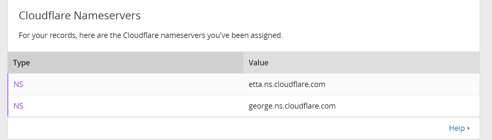
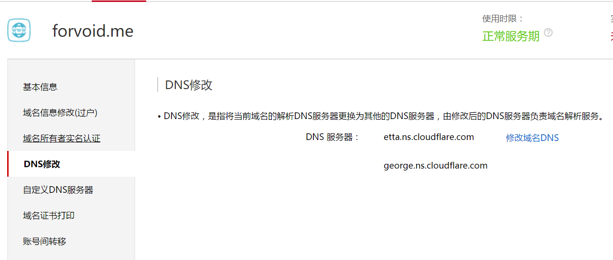
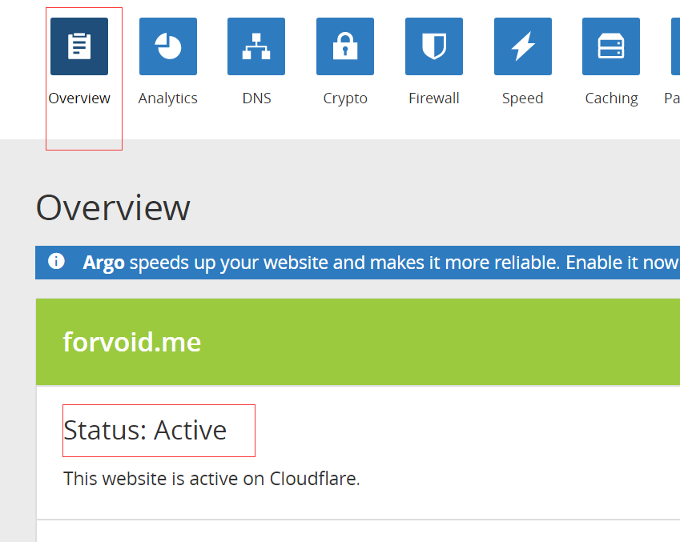

目的
因为现在大多数网站都在向HTTPS的协议转变，而我的博客是在github page上的采用github本身的域名是可以用https的，但是我们如果使用自己的域名CNAME到github的话，使用SSL协议就有些困难了。
所以我网上google了一下如何解决。但是网上的结果大多数是用Cloudflare的官方英文中翻译一下，而没有结合我们github page这个使用CLoudflare专门说一下。所以我记一下笔记，如果有人看到的话，有所帮助！
关于如何让github page绑定自己的域名
这个网上有很多教程都过了，可以自行google就好了。
创建CloudFlare帐户，并添加网站
前提条件：
- 我们拥有自己的域名 我的域名在阿里云 forvoid.me
- 需要翻墙（如果想更快的话）。
¶1、点击后面的网站进行CloudFlare的账户注册
https://www.cloudflare.com/a/sign-up
¶2、注册成功后点击后面增加域名
https://www.cloudflare.com/a/add-site

等一会扫描的时间过了就会进入下面的这个页面。
下面的页面就是你自己的DNS的解析需要的东西了。
因为后面会把DNS解析由原来的万网（我是在万网注册的域名），转到这个CloudFlare进行解析（原来的解析就是无效的了，不会用到了）。
所以这里现在可以填上前面如何用http的方式进行域名绑定的方式，也可以等后面再添加也可以。下面是其他网站的图片教程（我打不开CLoudFlare网站了^ _ ^）

然后选择免费计划

到你域名控制面板修改cloudflare给出的域名服务器，我这里以 万网为例
域名解析-》域名管理-》DNS修改


然后万网的生效时间是72小时，这个主要看运气一般就30m就行了

如果网站显示上图示，就可以了
¶3、设置SSL
- 点击菜单Crypto -》开启SSL

- 添加http重定向到https，不然http无法访问网站哦。
点击菜单Page Rules-》添加设置

添加自动重定向到 SSL页面

然后等待5-10分钟就设置完成了。
设置的重点
主要是那个DNS解析要搞清楚，如果设置了CloudFlare DNS解析后，原来的DNS解析就无法使用了。需要把全部的DNS解析写在CloudFlare的中，这就是我想说明的，其他的其他的的博客也有。